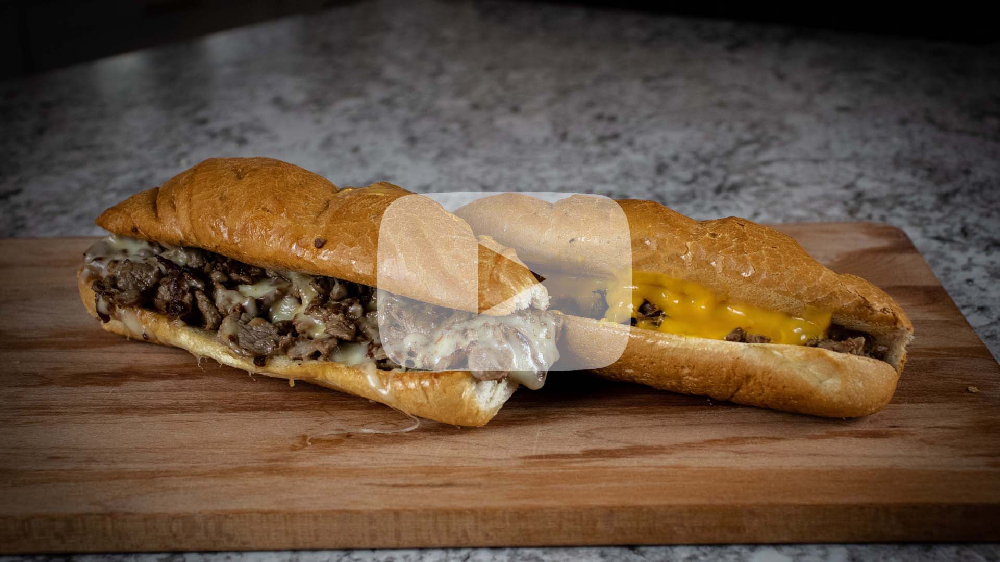

Philly Cheesesteaks
What's needed:
- - Ribeye steak
- - Hoagie rolls
- - Provolone cheese slices or Cheez Whiz
- - Pinch of salt
Directions:
- 1. Place your ribeye in the freezer for 45 - 60 minutes.
- 2. Once ribeye has rested in freezer for 45 - 60 minutes, remove from the freezer and trim excess fat from outside of steak. Once fat is trimmed, cut ribeye in very thin slices.
- 3. After cut in thin slices, chop slices the opposite way to create small, thin slices of steak.
- 4. Heat up cast iron skillet, flat top, or pan you're using on medium to medium high heat.
- 5. Before cooking steak, cut hoagie rolls. Do not cut rolls all the way through, leave a hinge on the roll. Place rolls open on the skillet, flat top, or pan to allow them to toast slightly.
- 6. Lastly before cooking the steak, start heating up the Cheez Whiz (if applicable) on your stove top. Cook on low, stir often. If you went with provolone solely, disregard this step.
- 7. Add a fat or oil to your skillet, flat top, or pan. Allow oil/fat to heat up. Add meat, continously tossing around to get an even cooking. Midway through cooking, salt meat with a pinch of salt.
- 8. Once meat is done, sort meat into two separate piles.
- 9. Place a few slices of provolone on the cooking surface. Once cheese has started melting, move one pile of meat onto cheese. Scoop up meat into hoagie(s).
- 10. Scoop other pile of meat into other hoagie(s). Add Cheeze Whiz, if solely provolone, repeat step 9.
- 11. Serve and enjoy.